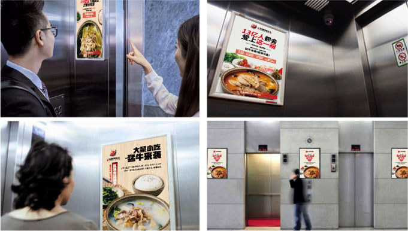
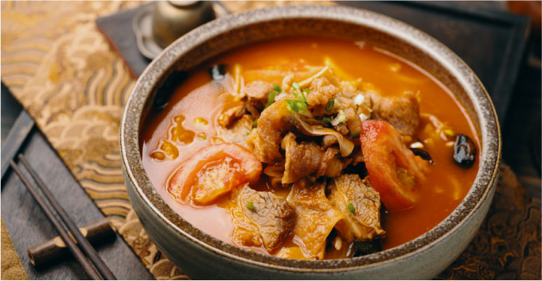
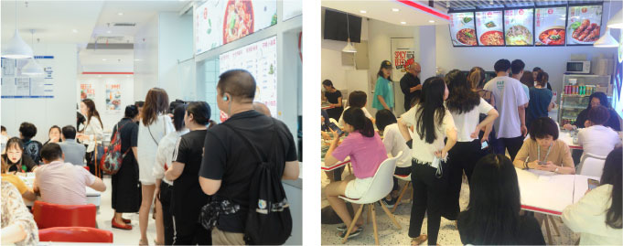

中式快餐的又一爆款
在火锅行业侵润了数十载的黄门火锅，凭借丰富的行业经验，怀揣宣传川渝美食文化的梦想，在2019年正式推出全新中式快餐品牌——黄门·水煮辣头牛，以川渝经典菜式“水煮牛肉”作为核心产品，带来打动人心的国民美味，让每一个中国人都能吃上最正宗的川式美味，都能吃到最好的牛肉快餐。
+ 市场扫描：一眼瞄准中式快餐市场上的空白
伴随着消费升级，以及国民餐饮需求的不断提高，越来越多中国人看清牛了肉的营养价值，牛肉正在逐渐走向每个中国人的餐桌上。2018年中国牛肉消费约814万吨，过去10年间每年平均增长约30万吨以上，预计到2020年，中国人将要吃下约 900 万吨的牛肉，21世纪的中国人，越来越爱吃牛肉。
在此大环境之下，越来越多的中式快餐品牌，在自己的菜单中都加入了牛肉类的菜品，但是在食材品质、产品质量、工艺口感等方面依旧具有明显的缺陷。同时在中式快餐的市场上完全以牛肉作为强势单品的品牌，在市场上几近于无，这也为“黄门·无辣不饭”提供了一个巨大的机遇窗口。
+ 矛盾洞察：一群普通的白领人群 VS. 没有时间去吃的一碗大菜
“水煮牛肉”作为一样传统大菜，虽然做法工艺较为简单，但是对于如今的白领人群来说，快节奏的工作与生活并不能让他们经常进到餐馆去吃一份正宗的“水煮牛肉”，他们更多的是选择在中午的1个半小时去吃那些只有很少营养价值的普通快餐。
若邻认为，如何做一碗份量充足、味道独特、营养充足，同时价格适中且方便快捷的水煮牛肉是行业面临的最大消费冲突。解决好这个冲突，就能取得品牌竞争的先机。
+ 矛盾解决：早上蒙牛，上午红牛，中午“猛牛”
一碗全新的快餐产品摆在餐做上，如何迅速打动消费者，让消费者第一时间记住我们？
若邻认为品牌要想在激烈的市场竞争中突破，“黄门·无辣不饭”必须要与消费者产生诉求共鸣，通过刺痛消费场景的缺失，以期达到传播效果的最大化！
早上营养，需要一瓶蒙牛，上午提神，需要一罐红牛，中午能量，需要一碗能量、份量、口感都无比凶猛的“水煮猛肉”。
从产品本身具备的独特性、新颖性上看，“黄门·无辣不饭”是颠覆性的创新产品，是快餐市场上闻所未闻，见所未见的产品，我们要让所有的消费者首先都注意到这是一支独创性的牛肉品类快餐。基于产品特点，在产品视觉包装、文案表达等层面上把“猛”的核心优势植入消费者心智中。
一碗水煮牛肉，凭借若邻对市场以及消费者的深入洞察，赋予“黄门·无辣不饭”更深层次的核心利益点，超脱于传统品牌包装所常用手法，使得品牌诉求与消费者诉求形成了共振效应，让“黄门·无辣不饭” 把握品类机会，实现品牌飞跃。并且在传播层面上我们借助“猛”这一超级符号，让“黄门·无辣不饭”产品包装在终端拥有动销力，迅速让广大消费者拥有熟悉感，突破同质化包装竞争。最后在品类基础上，打造差异化卖点、标准，去推动、引领品类的发展。